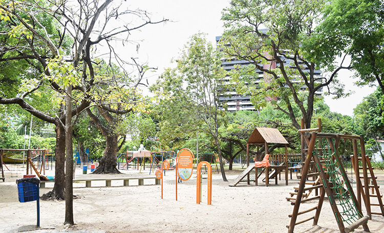

Para um momento de tranquilidade em meio à cidade, o Parque da Jaqueira é
o lugar ideal. Com amplas áreas verdes, trilhas para caminhada e espaços
para piquenique, é um refúgio onde é possível se desconectar do agito
urbano e desfrutar de um ambiente sereno.